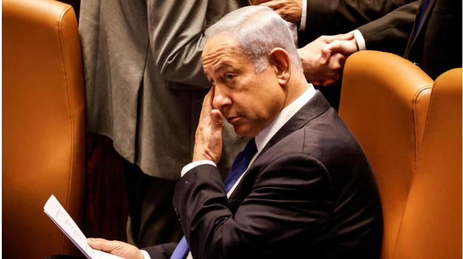

| נתניהו בריאיון ל-ABC: ביידן הזמין אותי לבית הלבן בסתיו, נקדם שלום עם סעודיה | עימותים בין מתנחלים לפלסטינים:אבנים יודו, רכב הוצת בכפר ליד שכם | קטאר: עליית בן גביר להר - ניסיון לפגוע בסטטוס-קוו ובמיליוני מוסלמים | שר הרווחה לבג"ץ: מתנגד לאימוץ ילדים על ידי להט"ב | היועמ"שית לבג"ץ:ניתן לפעול לתיקון האפליה בנושא האימוץ בקרב זוגות להט"בים | מזכ"ל האו"ם: דורש את שחרורו המיידי של נשיא ניז'ר שהודח מתפקידו | לכל המבזקים |
|---|

בריאיון נוסף לתקשורת הבינלאומית, אמר רה"מ כי ביטול עילת הסבירות הוא "תיקון קטן", וטען כי הקשיב לעצותיו של ביידן: "העברתי את זה בצורה הכי איטית שאפשר". לדבריו, הנשיא הזמין אותו לבית הלבן "אולי בספטמבר". בבית הלבן ציינו : "כרגע אין על מה להודיע". באופוזיציה תקפו: "שקרן".


הפרשן הבכיר תומאס פרידמן סיפר כי ביידן העלה בפניו את הדילמה בהכם, וציין: "ממשלה קיצונית תצטרך לבחור בין נורמליזציה לסיפוח"
הפרשן הבכיר תומאס פרידמן סיפר כי ביידן העלה בפניו את הדילמה בהכם, וציין: "ממשלה קיצונית תצטרך לבחור בין נורמליזציה לסיפוח"
הפרשן הבכיר תומאס פרידמן סיפר כי ביידן העלה בפניו את הדילמה בהכם, וציין: "ממשלה קיצונית תצטרך לבחור בין נורמליזציה לסיפוח"
הפרשן הבכיר תומאס פרידמן סיפר כי ביידן העלה בפניו את הדילמה בהכם, וציין: "ממשלה קיצונית תצטרך לבחור בין נורמליזציה לסיפוח"